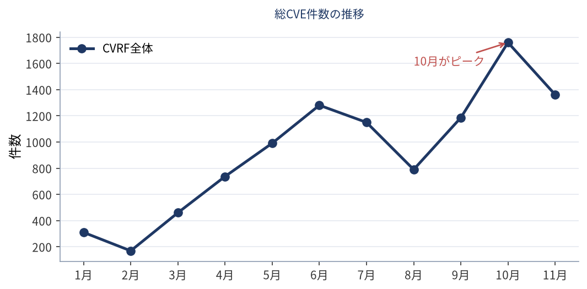
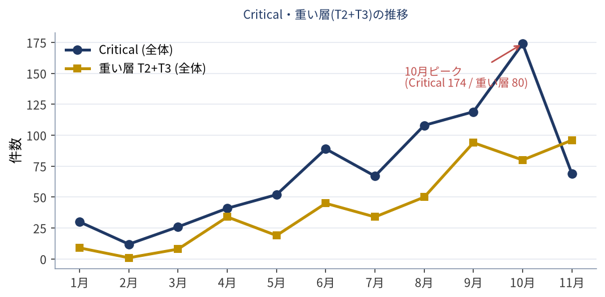
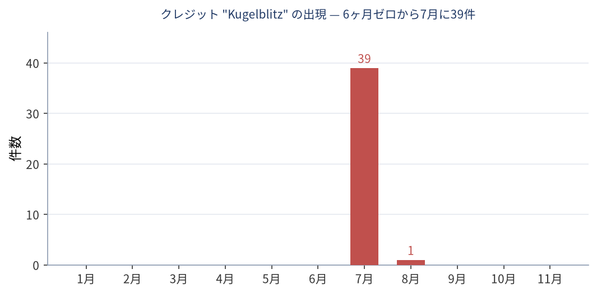
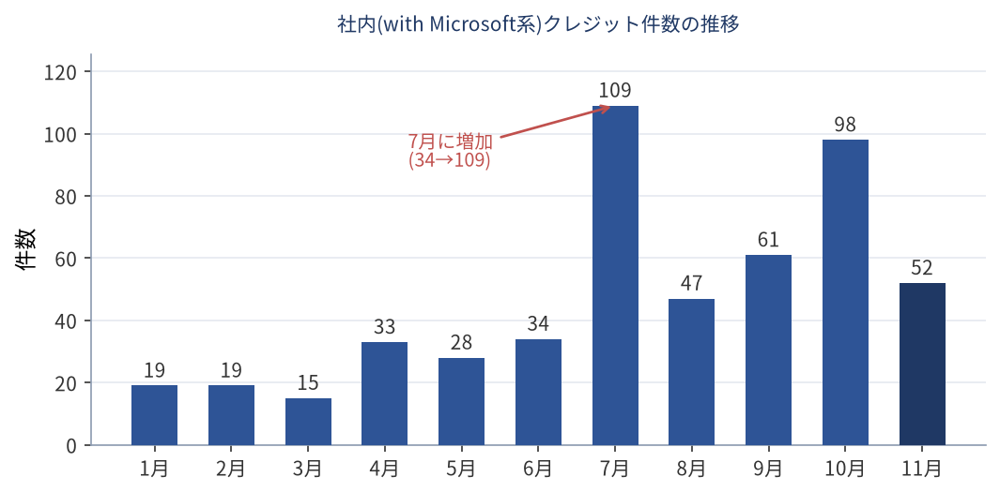

技術レポート（機械生成の事実 + 人間の解釈）
フロンティアAIによる脆弱性発見の急増
2026年11月時点の状況分析と、脆弱性対応にあたる実務者への示唆
脆弱性・パッチ対応の実務者および意思決定者
本レポートの構成と日付について 本レポートは、自動監視スクリプトが生成した事実記録（数値・表・グラフ）に、人間の解釈を差し込んで構成される。 事実データ取得日: 2026-11-12（スナップショットとして凍結） 解釈（本文分析）更新日: 2026-11-12 ※事実は自動、解釈は人間が別途更新する。両者の日付が離れている場合は、解釈が最新の事実を反映していない可能性がある。 |
MSRC の事後改訂について 本レポートは 2026-11-12 確定値に基づく。MSRC は過去月を事後改訂しており（例：6月 CVE 1281→1205）、改訂後データでは異なる結果に見える場合がある。改訂記録は別途保持。 数字は凍結の時点（2026-11-12）のもの。MSRC はクラウドサービス（Azure、Microsoft 365 のオンラインサービスなど）の CVE を月例の1週間あまり後にまとめて公開することがあり、その後に数が増えることがある。増えた分は翌号の改訂ノートで扱う。 |
【免責・出典】 • 本レポートは、脆弱性対応にあたる実務者を投影した仮想的な書き手による非公式な分析であり、特定の個人・組織の見解ではない。 • 事実データの出典：Microsoft MSRC CVRF、CISA KEV、その他公開情報。 • 分析の生成には AI（大規模言語モデル）を用いている。事実は可能な範囲で検証しているが、正確性・完全性を保証しない。重要な判断は一次情報で確認すること。 • 事実は自動更新されるが解釈は随時更新であり、両者の日付が離れている場合がある（ヘッダ参照）。 • 鮮度：本レポートの事実は 2026-11-12 時点。KEV や PoC 状況は時々刻々変わるため、最新は一次情報を参照。 |
【中立性に関する注記】 本レポートの分析生成には Anthropic 社の AI（Claude）を用いている。本レポートは同社の Project Glasswing 等に言及するが、これは公開情報に基づく中立的な記述を意図したものであり、特定企業を推奨・擁護するものではない。読者は一次情報に当たり、独自に判断されたい。 |
要旨
2026年11月の Patch Tuesday は、前月より件数が少なかった。CVE 全体は 1,760件から 1,362件に、MS本体相当は 1,419件から 1,092件に減った。本体相当の 1,092件はすべて Microsoft が採番したもので、うち 1,091件は 11月10日の月例で初めて公開された。
ただし、すべてが件数と同じ向きに動いたわけではない。変更管理が必要な重い層は、本体相当で 79件から 95件に増え、8月以降で最も多くなった。 本体相当の Critical は 77件から 64件に減った。件数と重い層が逆の向きに動いたのは、2か月連続である。
ゼロデイ（Microsoft の定義では、悪用が確認されたもの、または公開済みのもの）は1件で、Microsoft が悪用を確認している（悪用確認）。 深刻度は Moderate で、Critical ではない。この CVE は月例の当日に CISA KEV にも載った（KEV の取得は 11月12日）。
結論（一言） 件数は減ったが、重い層は増えた。今月も、件数の増減は対応の重さと一致しない。 |
用語解説：「CVRF全体」と「MS本体相当」 CVRF全体 — MSRC の月次文書に載るすべての CVE。Edge/Chromium、Azure Linux のパッケージの勧告、Azure クラウドの勧告も含む。報道各社の集計が食い違うのは、この母集団の切り方が違うためである。 MS本体相当 — CVRF全体から、影響製品がすべて Azure Linux のパッケージである CVE と、すべて Edge/Chromium である CVE を除いた母集団。Azure クラウドの勧告は本体相当に入る（今月の azure_cloud 20件は本体相当の側）。影響製品に Microsoft の製品が一つでも混じる CVE も本体相当に入る。製品識別子（ProductID を製品名に引き当てたもの）で判定し、CVE のタイトルの文字列は使わない。今月は本体相当 1,092件・除外 270件で、除外の内訳は Edge/Chromium 166件と Azure Linux 104件である。 前月は1件も無かった Edge/Chromium の勧告が、今月は戻ってきた。 |
分析：件数は減り、重い層は増えた
総数は前月より 22.6% 少ない。そのうえで、本体相当の中身と、件数と同じ向きに動かなかった指標を確かめた。
|
2026年10月 |
2026年11月 |
CVE 全体 |
1,760 |
1,362 |
MS本体相当 |
1,419 |
1,092 |
クレジットあり |
1,334 |
1,077 |
Critical（全体／本体相当） |
174／77 |
69／64 |
重い層（T2+T3・本体相当） |
79 |
95 |
ゼロデイ |
3（悪用確認1・公開済み2） |
1（悪用確認1） |
本体相当の 1,092件は、どれも Microsoft が CNA（CVE を採番した組織）である。1,091件は 11月10日の月例で初版が出た。月例より前に出たのは、11月5日の1件（Entra Device Registration の権限昇格）だけである。
除外の側は 341件から 270件に減り、中身も前月と違う。前月はすべて Azure Linux だったが、今月は Edge/Chromium が 166件（うち CNA が Chrome のものが 165件）、Azure Linux が 104件である。
悪用確認のあった CVE は、5か月続けて Critical ではない
今月、悪用が確認されたのは CVE-2026-124194（Microsoft Outlook のなりすまし） の1件で、深刻度は Moderate である。今月の Critical 69件には、悪用が確認されたものが1件も無い。
7月から11月までの5か月は、毎月悪用確認があり、そのどれも Critical ではなかった。ただし、5月には Critical の悪用確認が1件あった。Critical なら悪用されない、という意味ではない。 Critical だけを見て対応する運用では、この5か月の悪用確認をすべて見落とす、という意味である。今月の1件は、Important ですらなく Moderate である。
この CVE は CISA KEV にも載っている（2026年11月10日に収載。KEV の取得は 11月12日）。Microsoft の悪用確認と KEV への収載が、両方そろっている。 今月、公開済みだけのゼロデイは無い。
総数と重さ：同じ向きに動かなかったもの
件数は減ったが、対応の重さを表す指標は、それと同じ向きには動かなかった。
重い層（T2+T3・本体相当）は 79件から 95件に増えた。 本体相当に占める割合は 5.6% から 8.7% に上がった。95件は8月以降で最も多い（9月は 93件）。
重い層を製品カテゴリで見ると、SQL/Dynamics が 54件で、前月の 27件から倍になった。 Office は 35件から 26件に減り、Exchange は 7件から 9件に増えた（前月の値は、10月の凍結の写しを今月と同じ分類 v3 で数え直したもの）。
本体相当の Critical は 77件から 64件に減った。 内訳は遠隔コード実行 48件・権限昇格 16件で、計 64件である。
全体の Critical は 174件から 69件に減った。減った分の大半は、前月に除外の側にあった Critical 97件（Azure Linux）である。今月の除外の側の Critical は5件（Chromium 4件・CivetWeb 1件）である。
件数が減ったからといって、適用計画が軽くなるとは限らない。 先月は件数が最多で重い層が減り、今月は件数が減って重い層が増えた。
示唆と推奨アクション
以下は本レポートの分析に基づく推奨であり、確定した規制要求ではない。規制当局の個別の監督上の期待については、一次情報での確認を前提とする。
1. 監視指標（前号からの継続）
「CVE件数」を脅威の指標にしない。今月は件数が前月より 22.6% 減ったが、重い層は増えた。先月はその逆だった。件数の増減と防御の負荷は、2か月続けて同じ向きに動いていない。
代わりに、変更管理が必要な層の増減を毎月追う。今月は本体相当で 79件から 95件に増え、うち SQL/Dynamics が 54件である。件数の少ない月でも、適用計画は前月より重くなることがある。
ただし、件数は作業量ではない。 対象がいくつの製品にまたがるかで、手間は変わる。本レポートは、対象がいくつの製品にまたがるかを測っていない（前号と同じ限界）。
2. トリアージを深刻度ラベルから切り離す（前号からの継続）
今月の Critical 69件に悪用確認は無い。悪用が確認された1件は Moderate である。7月から11月までの5か月、悪用確認のあった CVE に Critical は含まれていない。
一方、5月には Critical の悪用確認があった。5か月の記録が示すのは、深刻度のラベルの高低で優先度を決めること自体が当てにならない、ということである。
優先度の決め方は、前号と同じく、CISA KEV・EPSS・資産への到達性の組み合わせに移す。
Critical の件数は、母集団を確かめてから読む。 今月の全体の Critical 69件のうち、5件は除外の側である。
3. 緊急パッチ SLA
今月の悪用確認1件（CVE-2026-124194）は、CISA KEV に 11月10日に収載されている（KEV の取得は 11月12日）。その日のうちに適用を始める対象として扱う。KEV の是正期限は 11月24日である（米国の連邦機関に向けた期限）。
ベンダーの CVSS ベクタによる攻撃の前提条件は、次のとおり。 ネットワーク経由で攻撃でき、事前の権限は要らず、攻撃の難易度は低い。ただし、ユーザーの操作が必要である。 影響はなりすましで、機密性への影響は「高」とされている。CVSS 基本値は 6.5、影響製品は 6件（Microsoft 365 Apps と Office LTSC 2021・2024）である。
時間的指標の「悪用コードの成熟度」は「高」（E:H）で、CVRF の悪用状況の記載（悪用を検知）と一致している。
Moderate・CVSS 6.5 という値は、深刻度や基本値で足切りする運用では後回しにされる。 この1件は、悪用確認でも KEV への収載でも拾える。
4. 自分の絞り込み規則を点検する（前号からの継続）
前号の記録④（公開済みだけのゼロデイが照合の対象から漏れていた）を受けて、今号から、KEV / EPSS の照合対象の条件に「公開済み」を足した（照合の規則 v3）。今月は公開済みだけのゼロデイが無いため、この変更で対象に加わった CVE は無い。
今月の照合対象は 916件（前月 1,164件）である。悪用確認の1件はその中に入っており、KEV への新規収載として検出された。
KEV に載っていても、照合の対象に入らない CVE がある。今月の CVRF にある CVE-2026-123158（OpenSSH。除外の側の Azure Linux の勧告）は、11月9日に CISA KEV に収載されたが、CVRF には悪用状況の記載が無い。深刻度は Important でクレジットも無く、照合の条件（悪用確認・公開済み・重い層・Critical・外部クレジット）のどれにも当たらないため、KEV の表には出てこない。
外部の脅威情報と自組織の資産を突き合わせるときは、突き合わせの対象から何が外れているかを、毎月の数字で確かめること。
5. Edge/Chromium 自動更新（前号からの継続）
今月の CVRF には Edge/Chromium の勧告が 166件ある（前月 0件、前々月 24件）。うち4件が Critical である。件数が振れる理由は、本レポートでは分からない。
この項の要点は件数によらない。Electron/CEF を組み込んだアプリ（Teams、Slack、VS Code など）は、ブラウザの自動更新の恩恵を受けない。 SBOM でこうした依存を洗い出す必要は変わらない。
6. AI 依存の BCP（前号からの継続）
AI を業務の流れに組み込むなら、最上位モデルへの依存を BCP の対象とし、複数モデルの併用と、切り替えの設計を標準にする。
実データ内訳 — 2026年11月 Patch Tuesday
以下は MSRC CVRF v3.0 から取得した一次データの集計である（凍結スナップショット 2026-11-12）。母集団は「CVRF全体」と「MS本体相当」を並べて示す。本体相当は、影響製品がすべて Edge/Chromium の CVE と、すべて Azure Linux の CVE を除いたものである。Azure クラウドは除外していない — 今月の azure_cloud 20件は本体相当に入る。数値と表は state から自動で生成しており、各表には事実に基づく要点を付ける。
表1. 深刻度別（母集団2種の併記）
深刻度 |
CVRF全体 |
(%) |
MS本体相当 |
(%) |
Critical |
69 |
5% |
64 |
6% |
Important |
1132 |
83% |
1027 |
94% |
Moderate |
113 |
8% |
1 |
0% |
Low |
48 |
4% |
0 |
0% |
Unrated |
0 |
0% |
0 |
0% |
合計 |
1362 |
100% |
1092 |
100% |
表1（深刻度別）の要点
Critical は前月の 174件から 69件に減った。CVRF 全体に占める割合は 9.9% から 5.1% に下がった。69件のうち5件は除外の側（Chromium 4件・CivetWeb 1件）で、本体相当の Critical は 64件である。 本体相当の Critical は前月の 77件から減ったが、本体相当に占める割合は 5.4% から 5.9% にわずかに上がった。64件の内訳は遠隔コード実行 48件・権限昇格 16件で、悪用が確認されたものは1件も無い。
表2. 再起動クラス別（実務負荷の軸）
クラス |
内容 |
CVRF全体 |
MS本体相当 |
T3 |
段階展開必須（Boot/Crypto） |
5 |
4 |
T2 |
変更管理・メンテ枠が必要 |
91 |
91 |
T0/T1 |
自動更新・定常パイプライン |
1266 |
997 |
表2（再起動クラス別）の要点
T2 と T3 を合わせた「重い層」は、本体相当で 95件（T2 91件・T3 4件）となり、前月の 79件から増えた。8月 42件・9月 93件・10月 79件と比べ、8月以降で最も多い。本体相当が 1,419件から 1,092件に減ったため、割合は 5.6% から 8.7% に上がっている。件数が減った月に、重い層は増えた。 製品カテゴリでは SQL/Dynamics が 54件で最も多い。ただし本レポートは、この 95件がいくつの製品にまたがるかを測っていない。
表3. 発見者大分類（CVRF全体）
区分 |
件数 |
(%) |
備考 |
クレジット無し |
285 |
21% |
自動化を含む可能性（断定不可） |
外部研究者（実名） |
859 |
63% |
実名の外部発見者 |
匿名（Anonymous） |
114 |
8% |
名乗り出た匿名 |
社内（with Microsoft等） |
52 |
4% |
Kugelblitz/MORSE/WARP・ACS等を含む |
ハッシュ識別子 |
52 |
4% |
MSが匿名化した識別子（正体不明） |
表3（発見者大分類）の要点
外部クレジットは 1,000件から 859件に、クレジットの無い CVE は 426件から 285件に、匿名は 167件から 114件に減った。全体に占めるクレジット無しの割合は 24.2% から 20.9% である。どの区分も総数と同じ向きに減っており、この表から、発見の傾向の変化は読み取れない。 減ったという事実だけを記録する。
表4. Critical脆弱性の発見者内訳（集約・実名なし）
発見主体 |
Critical件数 |
傾向 |
外部研究者（実名） |
44 |
Criticalの多数派 |
匿名（Anonymous） |
10 |
— |
クレジット無し |
7 |
自動化の可能性（断定せず） |
社内（ACS/WARP/MORSE等） |
6 |
少数（Networking/Hyper-V中心） |
ハッシュ識別子 |
2 |
— |
Kugelblitz（Edge・参考） |
0 |
Criticalには出現しない（面のみ） |
件数のみ（個人実名は事実データに保存しない）。上4〜5行はバケット別で合計=Critical総数。Kugelblitz 行は横断参考（加算しない）。個別の研究者名・CVE例は解釈側に散文で記載。
表4（Critical脆弱性の発見者内訳）の要点
クレジットの無い Critical は、前月の 98件から 7件に減った。Critical に占める割合は 56.3% から 10.1% である。前月の 98件のうち 97件は除外の側（Azure Linux）だった。今月の7件は、除外の側が5件、本体相当が2件である。 この表は CVRF 全体を数えているため、除外の側の Critical の増減が、クレジット無しの行にそのまま表れる。これまでの号と同じく、クレジットが無いことから、誰が見つけたかを推論しない。
表5. 製品カテゴリ別（CVRF全体）
カテゴリ |
件数 |
(%) |
Win Services/Components |
358 |
26% |
Office/Word/Excel/PPT |
200 |
15% |
Edge/Chromium |
166 |
12% |
Kernel/Driver |
161 |
12% |
Azure Linux（再掲載） |
104 |
8% |
Networking |
86 |
6% |
SQL/Dynamics |
54 |
4% |
.NET/Dev |
52 |
4% |
Graphics/Media |
33 |
2% |
Microsoft (other) |
33 |
2% |
Auth/Identity |
27 |
2% |
RDP/Remote |
23 |
2% |
Azure/Cloud |
20 |
1% |
Hyper-V/Virtual |
18 |
1% |
その他 |
14 |
1% |
Exchange |
9 |
1% |
Boot/Crypto (T3) |
3 |
0% |
SharePoint |
1 |
0% |
※この号から製品カテゴリの分類を v3 に改めた。v2 で「その他」に残っていた Microsoft 本体の部品名（HEVC・AD CS・WebDAV など）を、該当するカテゴリへ振り分けている。前号まで（2026年9月・10月号は v2）と件数を比べると、分類の変更だけで動いた分を含む（2026年10月を v3 で数え直すと、その他は 62 → 11）。
表5（製品カテゴリ別）の要点
この表は今号から分類 v3 で作っており、v3 で数えた値は今月が1点目である。 表の下の注記のとおり、v2 で「その他」に残っていた Microsoft 本体の部品名を、それぞれのカテゴリに振り分けた。前月の号の表5（v2）と並べると、分類を変えただけで動いた分が混じる。10月の凍結の写しを v3 で数え直した値と比べると、Edge/Chromium（0 → 166）、Office（172 → 200）、SQL/Dynamics（27 → 54）が増え、Azure Linux（341 → 104）、Windows のサービス（485 → 358）、カーネルとドライバ（276 → 161）、ネットワーク（148 → 86）が減った。「その他」は 11件から 14件である。
8月以前の表5や、9月・10月の表5（v2）とは、そのまま並べて比べないこと。 分類器の版が違う。
補遺：「AI関連」を示唆するクレジットの棚卸し
「Kugelblitz」というクレジット名は、7月に 39件、8月に 1件で、9月・10月・11月は 0件である。Critical には一度も現れていない。
この推移は解釈できない。 言えるのは、「その名前が3か月続けて出ていない」ことだけである。
8月号で記録した「AIフィジカルインターフェイス二号機」というクレジット文字列は、今月 36件ある。凍結値では、6月 2件・7月 10件・8月 13件・9月 38件・10月 3件・11月 36件である。今月の 36件はすべて本体相当の Important で、Critical も悪用確認も無い。正体は断定しない。 8月号と同じく、言えるのは、クレジットの文字列がこう書かれている、ということだけである。
今月のゼロデイ CVE-2026-124194 のクレジットの1つは、「（研究者名） using Claude with Anthropic」という文字列である。AI（Claude）を使ったことは、クレジットの文字列そのものに書かれている。 同じ文字列は10月にも1件ある。本レポートは、この記載から、発見の過程や AI の寄与の大きさを推定しない。記録するのは、文字列がこう書かれている、という事実だけである。
こうしたクレジット名から実体を推定しない、という規律は変わらない。数えたのは、クレジット文字列の一致だけである。
過去データとの比較 — 2026年1月〜11月の推移
月をまたいで比べる条件がそろっているのは、8月から11月の4か月である。4か月とも、母集団の分離は製品識別子による分類器（v2）で計算しており、凍結も Patch Tuesday の2日後でそろっている。7月以前は分類器が違う。推移表から「MS本体相当」の列を外しているのはこのためで、以下の図の軸は、どれも分類器によらない。なお、表5の製品カテゴリは、今号から別の版（v3）である。
推移表（取得ラグに頑健な実数のみ）
月 |
CVE全体 |
Critical |
重い層(T2+T3) |
Kugelblitz |
社内(MS) |
1月 |
310 |
30 |
9 |
0 |
19 |
2月 |
169 |
12 |
1 |
0 |
19 |
3月 |
460 |
26 |
8 |
0 |
15 |
4月 |
737 |
41 |
34 |
0 |
33 |
5月 |
991 |
52 |
19 |
0 |
28 |
6月 |
1281 |
89 |
45 |
0 |
34 |
7月 |
1150 |
67 |
34 |
39 |
109 |
8月 |
790 |
108 |
50 |
1 |
47 |
9月 |
1186 |
119 |
94 |
0 |
61 |
10月 |
1760 |
174 |
80 |
0 |
98 |
11月 |
1362 |
69 |
96 |
0 |
52 |
※「CVE本体（MS本体相当）」の列は載せない。母集団の分類器を 2026-Aug から v2（影響製品ベース）に替えており、v1（タイトルベース）で凍結した月と同じ列に並べると、分類器を替えたことが「MS本体相当の急変」という推移に見えるため。当月の本体側の内訳は上の表に載せている（単月なので版の混在は起きない）。

図1: 総CVE件数の推移（CVRF全体）
図1（総CVE件数）の解釈
今月の 1,362件は前月の 1,760件より少なく、観測してきた中では前月に次いで2番目に多い。この曲線は、防御の負荷とも危険度とも対応しない。今月は件数が減り、本体相当の側では重い層が増えた。

図2: Critical件数・重い層(T2+T3)の推移
図2（Critical・重い層）の解釈
今月も2本の線は逆の向きに動いた。向きは先月と反対である。 Critical（全体）は 174件から 69件に減り、重い層（全体）は 80件から 96件に増えた。Critical が減った分の大半は、前月に除外の側にあった 97件が今月は無いためである。この図は CVRF 全体を描いているため、除外の側の Critical の増減が、そのまま線に表れる。

図3: クレジット「Kugelblitz」の月次出現
図3（Kugelblitz）の解釈
7月に突出した後、8月は 1件、9月から11月は 0件である。曲線の形から、主体の活動を読み取ることはできない。

図4: 社内(with Microsoft系)クレジット件数の推移
図4（社内発見）の解釈
Microsoft 社内発見のクレジットは 98件から 52件に減った。クレジットあり全体に占める割合も 7.3% から 4.8% に下がっている。件数と割合は同じ向きに動いた。 この図は件数を描いている。
推移から読み取れること（要約） 総数と Critical（全体）は前月から減った。重い層は増え、8月以降で最も多い。 前月に Critical が多かったのは除外の側（Azure Linux）のためで、今月はそれが無い。本体相当の Critical も減った。 「MS本体相当」は8月から11月の範囲で比べられる。表5 は今号から v3 で、前号までの表5 とは版が違う。 社内発見は、件数も割合も減った。図は件数を描いている。 |
KEV / EPSS — 即応の優先度づけ
以下は対象CVE（T2/T3 ∨ Critical ∨ 外部研究者クレジット ∨ 悪用確認 ∨ 公開済み）を CISA KEV・FIRST EPSS と照合した結果。KEV = CISA が悪用を確認した離散的事実（通知トリガー。Microsoft 自身の悪用フラグ＝本レポートの「悪用確認」とは別の出典）。EPSS = 悪用確率の推定（取得時点の値・日々変動・参考）。数値から発見主体・因果は断定しない。
即応対象 — CISA KEV 収載（取得 2026-11-12）
CVE |
製品名 |
深刻度 |
再起動クラス |
MS の悪用フラグ |
CVE-2026-124194 |
Microsoft Outlook |
Moderate |
T0/T1 |
Yes |
※「MS の悪用フラグ」は CVRF（2026-11-12 凍結スナップショット）の Exploited の値（Yes = 本レポートの「悪用確認」）。KEV 収載（CISA の判断）とは別の出典で、両者は一致しないことがある（KEV に載っていてもフラグが No のことがある）。本文で「悪用」と書くときは、どちらの根拠かを分けて書く。
EPSS 上位 — 悪用確率の推定（取得時点 2026-11-10）
CVE |
製品カテゴリ |
EPSS |
パーセンタイル |
CVE-2026-109469 |
Azure/Cloud |
0.0067 |
52.2% |
CVE-2026-124040 |
Azure Linux（再掲載） |
0.0051 |
44.2% |
CVE-2026-121035 |
Edge/Chromium |
0.0044 |
38.8% |
CVE-2026-121126 |
Edge/Chromium |
0.0041 |
35.9% |
CVE-2026-121203 |
Edge/Chromium |
0.0037 |
31.2% |
CVE-2026-76024 |
Edge/Chromium |
0.0026 |
18.2% |
CVE-2026-99221 |
Azure Linux（再掲載） |
0.0018 |
7.3% |
※EPSS は毎日更新され値が変動する。上表は取得時点（2026-11-10）のスナップショットであり、単独のトレンド指標として用いない。通知トリガーには KEV のみを使う（EPSS は使わない）。
※製品名（KEV表）・製品カテゴリ（EPSS表）は CVRF（2026-11-12 凍結スナップショット）由来。KEV 収載状況・EPSS 値とは別ソース・別時点である。カテゴリは表5と同一の分類による。製品名/カテゴリの数値から発見主体・因果は断定しない。
別紙：調査手順・出典・アカウンタビリティ記録
この別紙は、本編の結論に至った調査の過程を記録する。分析を再現できるようにし、説明責任を果たすためである。
1. 調査の目的と問い
本号の問いは前号から引き継いでいる — 月次の脆弱性データから、対応の負荷と実際の危険度について何が言えるか。加えて本号では、前号で総数が最多となった後に件数が減った今月、重さの指標がどう動いたかを確かめた。
2. 情報源
本号は一次データだけに依拠しており、報道などの二次情報は参照していない。
MSRC CVRF API v3.0 — 月例のセキュリティ更新を、CVE ごとの構造化データで提供する。発見者のクレジット、深刻度、悪用状況、対象製品、CVSS ベクタ、FAQ を含む。
CISA KEV カタログ — 悪用が確認された脆弱性の一覧。当月の CVE との照合に使った。
FIRST EPSS — 30日以内に悪用の活動が観測される確率の推定値。
3. データ取得方法
一次データは取得担当者の手元の環境で MSRC CVRF API から取得し、Patch Tuesday の2日後（11月12日 07:18）に凍結した。8月から10月と同じ間隔である。今号から、凍結の時点の CVRF と KEV カタログの写しを、凍結値と一緒に残している（写しを数え直すと凍結値と一致することを確かめた）。凍結の前日（11月11日、CVRF の版 2026-11-10T08:00）の取得と比べると、本体相当 1,092件・本体相当の Critical 64件・重い層 95件・ゼロデイ1件は変わらなかった。総数は 1,342件から 20件増えた。20件はすべて除外の側（Azure Linux）で、うち 18件は 11月11日に初版が出たものである。全体の Critical は 68件から 1件増えた（CivetWeb の CVE-2026-124040、除外の側）。クレジットありも 1件増えた（1,076 → 1,077）。KEV は凍結と同じ日（11月12日）に取得した（カタログの版 2026.11.10）。EPSS の日付は 2026-11-10 である（取得の時点で FIRST が出していた最新が 11月10日付だった）。 月例の CVE の多くは、まだ EPSS の値を持たない（照合対象 916件のうち、値があるのは7件）。
4. 分析手順（時系列）
Patch Tuesday の2日後に一次データを取得した。
前日の取得と比べ、本体相当・本体相当の Critical・重い層・ゼロデイが動いていないことを確かめた。総数は除外の側で20件増え、全体の Critical とクレジットありが1件ずつ動いた（第3節）。
凍結した。凍結の時点の CVRF と KEV カタログの写しを残した。
当月の照合対象について、KEV と EPSS を取得した。
ゼロデイ1件について、CVRF の悪用状況・CVSS ベクタ・影響製品を原文で確かめた。
重い層が増えたため、製品カテゴリ別の内訳を確かめた。前月との比較には、10月の凍結の写しを今月と同じ分類（v3）で数え直した値を使った（第5節・記録①）。
5. 調査過程の記録【重要】
説明責任のため、判断とその根拠を記録する。
記録① 表5 の分類の版を v3 に改めた。 v2 では、製品識別子から引いた製品名のうち、Microsoft 本体の部品名（HEVC・AD CS・WebDAV など）がどの規則にも当たらず、「その他」に残っていた。v3 はこれらを、それぞれのカテゴリに振り分ける。10月の凍結の写し（凍結値と同じ版の CVRF）を v3 で数え直すと、「その他」は 62件から 11件になる。写しの総数・Critical・本体相当の Critical は、数え直しても凍結値（1,760・174・77）と一致する。母集団の分離（本体相当／除外）は v2 のままで、v3 の影響を受けない。 本号の本体相当・Critical・重い層の数は、前号までと同じ規則で数えている。
記録② 照合の規則を v3 に改めた。 前号の記録④を受けて、KEV / EPSS の照合対象の条件に「公開済み」を足した。今月は公開済みだけのゼロデイが無く、この変更で照合対象に加わった CVE は無い。
継承③ 同じ文書の中での悪用状況の記載。 前々号は、悪用が確認された CVE の中に、CVSS の時間的指標が Threats の記載と一致するものと、一致しないものが混じっていたことを記録した。今月の悪用確認1件（CVE-2026-124194）は、時間的指標が「高」（E:H）で、Threats の「悪用を検知」と一致している。前月に続いて一致しているが、2件が一致したからといって、この欄が使えるようになったとは言えない。本レポートの悪用フラグは、引き続き Threats から導いている。
継承④ 状況証拠だけで実体に結びつけない。 7月号は「Kugelblitz」を特定の内製 AI ツールと断定し、一次情報で裏を取って撤回した。この規律は本号でも変わらない。同じ名前のクレジットが3か月続けて0件であることから、活動の停止も継続も主張しない。
6. 最終的に依拠した根拠と、その限界
依拠した根拠（確度：高）
凍結値は一次データを機械で集計したものである。凍結の前日の取得と比べて、本体相当・本体相当の Critical・重い層・ゼロデイが動いていないことを確かめた（総数は除外の側で20件増えた）。
凍結の時点の CVRF と KEV カタログの写しを残しており、写しを数え直した値は凍結値と一致する。
今月も母集団の分離は製品識別子によるもので、製品識別子はすべて解決した（未解決0件）。除外の 270件は Edge/Chromium 166件と Azure Linux 104件である。
悪用確認1件の攻撃の前提条件（ネットワーク経由・事前の権限は不要・ユーザーの操作が必要・攻撃の難易度は低い）は、CVRF の CVSS ベクタに基づく。KEV の収載日と是正期限は、凍結の日に取得した KEV カタログによる。
限界（確度：未確定・要注意）
重い層が増えた理由は分からない。 SQL/Dynamics に多いことは確かめたが、その理由は CVRF からは読めない。
重い層の件数は測っているが、対象の製品がどれだけ分かれているかは測っていない。 件数が増えたことをもって、作業量が増えたとは言えない。
前月とのカテゴリの比較は、10月の写しを v3 で数え直した値による。 前号の表5（v2）の値とは違う。
Edge/Chromium の勧告の件数が月ごとに大きく振れる理由は分からない。
悪用確認1件について、実際の攻撃事例や観測された手口は確かめていない。 攻撃の前提条件は CVRF の CVSS ベクタによる評価で、実地で観測したものではない。
EPSS は 2026-11-10 付の値である。 値は毎日変わり、月例の CVE の多くはまだ値を持たない。
7. 再現手順
本号の数値は、公開リポジトリ msrc_monitor の収集・凍結ツールで再現できる（Python 3.12 と、MSRC API に届くネットワークが必要）。ただし MSRC は過去の月を後から改訂するため、まったく同じ値が再現されるとは限らない。凍結の後の改訂は、別に記録している。
当月の一次データの取得: python collect.py 2026-Nov
取得値の確認と凍結（凍結は人間が実行し、既に凍結した月は拒否される）: python freeze_month.py 2026-Nov --dry-run の後に python freeze_month.py 2026-Nov
KEV/EPSS との照合: python enrich.py 2026-Nov
発見者クレジットの集計（CVE ごと・重複を除いたもの）: state/2026-Nov.json の credit_counts / finder_bucket を参照
解釈の文章は月ごとに interpretation/<年-月>/ に分かれており、当月以外のものを混ぜてビルドすることはできない。
確度の階層（本レポートの主張の格付け） 【高】 総数は 1,760 から 1,362 へ、本体相当は 1,419 から 1,092 へ減った／重い層（本体相当）は 79 から 95 へ増え、SQL/Dynamics が 54件／本体相当の Critical は 77 から 64 へ減った／悪用確認は1件で Moderate、Critical 69件に悪用確認は無い／その1件は KEV にも収載（11月10日）／母集団の分離は製品識別子により、全件を解決した 【中】 悪用確認のあった月が、5か月続けて Critical を含まないという観察（月ごとの件数は1〜2件で、5月には Critical の悪用確認がある） 【未確定】 重い層が増えた理由／重い層の対象の製品がどれだけ分かれているか／Edge/Chromium の件数が振れる理由／Kugelblitz が0件である理由 【要注意】 表5 は今号から v3 で、前号までの表5 とは版が違う／照合の規則は今号から v3（公開済みを追加）／照合の対象外の KEV の CVE がある（除外の側の OpenSSH） |
本レポートはAIアシスタント（Claude）との対話を通じて作成された。一次データの取得・実行は取得環境で行われ、数値はその実行結果に基づく。解釈・分析にはAIの寄与が含まれるため、重要な意思決定に用いる際は一次情報での再確認を推奨する。